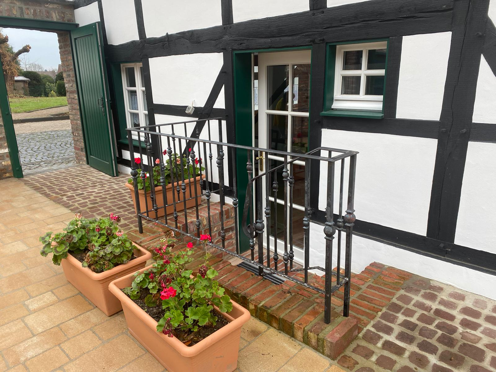

Praxis
Praxisräume
In den Räumen des ehemaligen Bauernhofes mitten im denkmalgeschützten Ortskern von Liedberg schaffen wir einefreundliche Atmosphäre für Sie.
BICOM BodyCheck
Wir nutzen in unserer Praxis das BICOM BodyCheck zur Früherkennung von Vorbeugung von Erkrankungen. Neuste Technologie ermöglicht dieses bioenergetische Testverfahren.
Parken
Direkt vor unseren Praxisräumen sind ausreichend Parkplätze vorhanden. Fragen Sie gerne auch unser Team nach weiteren Informationen zur Anfahrt.
Neue Praxisräume. Ein Bauernhof wird zur Wohlfühloase.
2021 haben wir unsere neuen Praxisräume an der Tränke 3-5 eingeweiht. Wir freuen uns darauf, Sie hier zu begrüßen.
header-girl